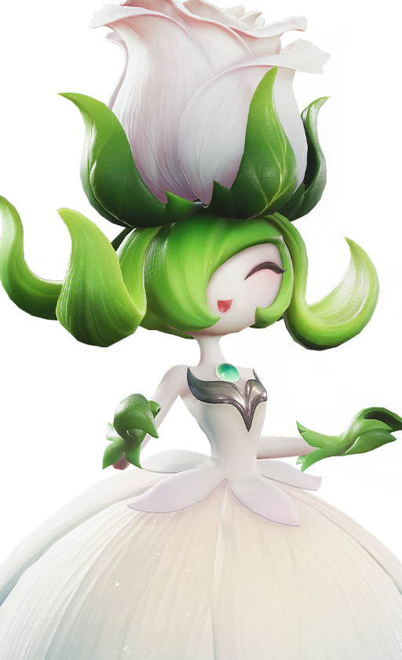

애니모 천휘 플로리안 출현 위치, 로즈타워 숲 풍요로운 지맥 주간 활용법
애니모 하시는 분들 사이에서 요 며칠 '로즈타워 숲'이 유독 시끌시끌하더라고요. 무슨 일인가 싶어서 공식 공지를 직접 열어봤더니, 이번 주 한정으로 '천휘 형태 플로리안'이 그 구역에 뜬다는 소식이었어요. 저도 공지 원문까지 하나하나 확인해서 언제까지인지, 뭘 챙겨야 하는지 정리해봤습니다.
애니모 천휘 플로리안이 지금 로즈타워 숲에 뜨는 이유
이건 '풍요로운 지맥'이라는 주간 로테이션 필드 이벤트 때문인데요. 애니모 9월 23일 업데이트 공지(「바람 따라 출발·상」)를 보면, 이벤트 기간 동안 특정 천휘 형태 애니모가 지맥 에너지에 끌려서 정해진 구역에만 한정으로 나타난다고 적혀 있거든요. 이번 주(9월 28일~10월 5일)는 로즈타워 숲에 천휘 플로리안이 뜨고, 다음 주(10월 5일~12일)는 청석 대지로 넘어가 천휘 모터터가 뜨는 식으로 매주 대상과 장소가 바뀌는 로테이션이더라고요. '주간 UP'이라는 표현도 게임이 붙인 정식 명칭이라기보다는, 스케줄표에서 흔히 쓰는 관용 표기에 가까워요.

아래에서 두 번째 줄이 '풍요로운 지맥' 로테이션이에요(맨 아래는 '부화 가속'이니 헷갈리지 마세요). 이번 주 칸을 찾아보시면 돼요.
이미지 출처: 애니모 공식 뉴스 · 네이버 본문엔 받아서 재업로드 권장
정확히 언제까지, 참여 조건은 뭘까요
9월 28일 새벽 4시부터 10월 5일 새벽 3시 59분까지, 서버 시간 기준으로 진행돼요. (공식 표기는 UTC+8 기준이라 한국시각으로 환산하면 약 1시간 뒤인 05:00~04:59쯤으로 추정되는데, 정확한 국내 표시값은 공식이 따로 밝히지 않았더라고요.) 공식 공지에 나온 값을 그대로 정리하면 이렇습니다.
- 시작: 2026년 9월 28일 04:00
- 종료: 2026년 10월 5일 03:59 (Apac 서버 표기 기준)
- 등장 지역: 로즈타워 숲
- 참여 조건: 캐릭터가 '학생Ⅱ'로 승급
학생Ⅱ 미만이면 이벤트 구역 진입이나 참여 자체가 안 될 수 있다고 공지에 적혀 있어서, 아직 승급 전이라면 이것부터 먼저 챙겨두시는 게 좋거든요. 그리고 하나 짚고 갈 게 있는데, 이번 건 코드를 입력해서 받는 쿠폰형 이벤트가 아니라 직접 그 구역에 가서 잡아야 하는 필드 출몰형이에요. 별도로 발급되는 쿠폰 코드는 이번 공식 공지엔 없고, 포획 자체가 보상이라 이 기간 안에 직접 잡는 것 말고 따로 챙겨주는 보상 아이템 목록도 없더라고요. 혹시 나중에 쿠폰이 따로 풀리면 애니모 공식 홈페이지 뉴스 게시판(aniimo.com)에서 공지될 테니 그쪽을 확인하시면 될 것 같아요. 정확한 국내 표시 종료 시각은 공식 공지에 따로 없어서, 게임 접속 후 이벤트 화면의 카운트다운으로 직접 확인해보시는 게 정확해요.
확인 위치: 게임 접속 후 이벤트 화면의 카운트다운 직접 확인(공식 공지는 서버 시간대만 표기, 한국 클라이언트 기준 값은 별도 안내가 없어요) · 확인되면 아래에 채워주세요.
이 화면 하나로 언제까지인지, 조건이 뭔지 한 번에 보여줄 수 있어요.
플로리안이 누구길래 이렇게 챙기는 걸까요
플로리안은 원래 로즈타워 숲에 사는 풀 속성 서포터인데, 천휘 형태가 되면 원소가 빛/풀 복합으로 바뀌는 게 포인트더라고요. 기본형 스탯은 아래와 같아요.
| 항목 | 수치 |
|---|---|
| HP | 95 |
| 공격 | 113 |
| 방어 | 70 |
| 에너지회복 | 78 |
| 무력화저항 | 70 |
| 무력화 | 91 |
| 총합 | 517 |
특성은 '팬텀의 약점'인데, 파티원이 평타를 칠 때 [장미의 인장]이 중첩되면서 에너지 소모가 줄어드는 서포터형 특성이에요. 스킬 6종 중에는 '스파클 로즈'라는 빛 원소 스킬도 있는데, 이건 천휘 형태 때문에 새로 생긴 게 아니라 기본형 플로리안 도감에도 원래부터 있던 스킬이더라고요. 서포터 포지션이라 딜러처럼 화려하진 않지만, 이번 주엔 '천휘'라는 희귀도가 붙는다는 것만으로도 챙겨볼 이유는 충분하답니다.

장미를 머리에 인 것 같은 모습이 플로리안의 특징이에요.
이미지 출처: 애니모 공식 위키 이미지 · 네이버 본문엔 받아서 재업로드 권장
지맥 결정 무리 생태 육성부터 포획까지, 흐름이 이렇더라고요
해외 팬 가이드에 따르면 지맥 결정 무리를 생태 육성해서 천휘 에너지를 올리고, 확률로 천휘 현상이 뜨면 별도 지점으로 이동해 포획하는 3단계 흐름이에요. 다만 이건 공식이 확인해준 내용이 아니라 해외 팬 사이트의 주간 가이드가 설명하는 방식이라, 참고 정도로만 봐주시면 좋겠어요. 애니모 공식 한국어 공지는 '지정 구역에서 한정 출몰한다'고만 밝혔지, 아래 절차나 좌표까지 명시하진 않았거든요.
- 지맥 결정 무리를 찾아서 생태 육성한다
- 생태 육성할 때마다 확률로 천휘 에너지가 오르고, 누적되면 '천휘 현상'이 발동한다
- 현상이 뜨면 별도로 지정된 지점으로 이동해 포획용 애니팟으로 포획한다
참고로 지맥 정수로 생태 육성할 때마다 즉시 발동 확률이 3%라는 수치는 애니모 공식 확률 안내 페이지에도 같은 값이 있어서, 이 부분은 상시 시스템과 이어지는 얘기로 보여요. 다만 이번 이벤트 주간이라고 해서 그 확률 자체가 평소보다 오르는지는 공식 어디에도 나와 있지 않아요. '이 구역에 한정 출몰한다'는 것과 '확률이 더 잘 뜬다'는 건 다른 얘기라서, 섞어서 단정하지 않는 게 맞는 것 같아요. 정확한 좌표나 확률 변동 여부는 인게임에서 직접 확인해보시는 걸 추천드려요.
확인 위치: 인게임 직접 확인(공식 공지엔 좌표·확률 수치가 없고, 해외 팬 가이드 수치는 2차 출처예요) · 확인되면 아래에 채워주세요.
맵만 봐도 어디부터 가야 할지 감이 오실 거예요.
이 화면 한 장이 '진짜 됐다'는 증거가 돼요.
같이 진행 중인 다른 이벤트도 있나요
네, 대상이 다른 이벤트 두 개가 같은 기간 겹쳐서 돌고 있어요. 헷갈리기 쉬워서 표로 정리했어요.
| 이벤트 | 기간 | 참여 조건 | 내용 |
|---|---|---|---|
| 애니모 발견왕 | 9/25~10/9 | 학생Ⅱ | 썬더자드 수색·포획, 조사 퀘스트 보상 |
| 여정의 빛 | 10/1~10/29 | 학생Ⅰ | 누적 로그인 보상 |
둘 다 플로리안이랑은 상관없는 별개 이벤트예요. 경험치나 재화를 더 주는 배율형 보너스는 이번 공지 어디에도 없습니다. '동시에 다른 이벤트가 뜬다'는 뜻이지, 확률이나 배율이 올라간다는 얘기는 아니라는 점만 정확히 짚고 갈게요ㅎㅎ.
자주 묻는 질문
Q. 천휘 형태 플로리안은 어디서 잡을 수 있나요?
이번 주(9/28~10/5) 로즈타워 숲에서 한정으로 만날 수 있어요. 평소엔 플로리안이 기본 형태로만 나오는 곳인데, 이번 주간엔 천휘 형태도 같이 출몰하는 거예요.
Q. 학생Ⅱ가 안 됐으면 아예 못 하나요?
공식 공지 문구상 학생Ⅱ 승급이 참여 조건으로 명시돼 있어서, 미만이면 구역 진입이나 참여가 제한될 수 있어요. 승급부터 먼저 챙기시길 추천드려요.
Q. 이번 주 놓치면 다음에 또 볼 수 있나요?
공식 공지는 이번 주 로즈타워 숲 한정 출몰이라고만 밝혀서, 같은 로테이션이 나중에 다시 도는지는 아직 알 수 없어요. 다음 주는 청석 대지·모터터 차례로 넘어가는 것만 확정된 상태예요.
Q. 이벤트 주간이라 포획 확률이 더 높아지나요?
공식 원문엔 확률이 오른다는 내용이 없어요. '지정 구역에서 한정 출몰한다'는 것만 명시돼 있어서, 확률 자체가 올랐다고 단정하기는 어려워요.
Q. 경험치나 재화도 같이 챙길 수 있나요?
이번 100140 공지에는 경험치·재화를 올려주는 배율 안내가 없어요. 같은 기간 애니모 발견왕·여정의 빛이 별도로 진행 중이긴 한데, 이것도 배율이 아니라 각자 다른 보상 구조의 이벤트예요.
로즈타워 숲이 원래 플로리안 서식지라 아주 낯선 곳은 아니지만, 천휘 형태로 만날 수 있는 건 이번 주뿐이니 학생Ⅱ 승급부터 챙겨서 다녀오시면 좋을 것 같아요.
✔ 애니모 같이 보기 좋은 내용
· 애니모 육성 뭐부터 해야 하나, 잠재력 진화 공명 순서 레벨 구간별 정리
· 애니모 공명 단계 육성, 만상의 결정 몇 개 있어야 다음 단계 가나
· 애니모 특성 총정리, 계열 공유 특성부터 고유 능력 확인법까지
참고한 곳
· 애니모 공식 뉴스(천휘 플로리안 등장 안내, 100140)
· 애니모 공식 뉴스(이벤트 일정, 100118)